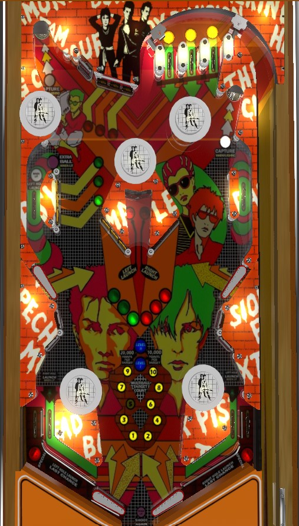

Punk! wants the player to always be in multiball, but the only way to lock balls for multiball is to make hairpin-precise shots or rely on pop bumper luck to land in the saucers at the top of the game. Complete the top lanes to places to release locked balls: the upper side lanes, the center standup target lane, or the in lanes. While in multiball, shoot drop targets; in addition to their normal value, you get a bonus when multiball ends or after hitting 10 drop targets that can be worth up to 20,000 points per drop target.
Lit top lanes score 5,000 points; unlit top lanes score 1,000. Roll through a lit top lane to unlight it. Lane change is available with the right flipper to rotate which top lanes are lit. Unlighting all 3 top lanes scores 20,000 points and qualifies two lock release targets around the playfield, which are discussed in more detail in the Locks and multiball section below.
There are 4 banks of drop targets in the game, which I refer to as top, far left, middle left, and middle right. Each target down in any bank scores 5,000 points, plus an additional 1,000 for each light in front of that bank. Completing a bank resets it and lights one of the inserts in front of that bank. The max value per drop target, then, is 8,000 points. Completing all 4 drop targets at least once in a single ball lights the upper left side lane for extra ball. Lighting all of the green lights by completing the middle left and far left banks 3 times each in a single ball lights the left out lane for Special. Lighting all of the red lights by completing the middle right and top drop targets 3 times each lights the right out lane for Special.
Unless a multiball is running, the saucers in the top left and top right are always flashing to lock a ball. If a saucer is lit solidly, a ball has already been locked there. Locking a ball scores 5,000 points. The locks can be made with very precise direct shots, but you're just as likely to earn a lock from a fortunate pop bumper bounce than a direct shot, especially for the left lock. To start multiball, you need to light a target lit for Launch, then make that target. To light Launch targets, you need to complete the top lanes. The only way to get back to the top lanes mid-ball is to use an upper flipper- I prefer the right- to shoot the tiny lane in between the top drop targets and the top lanes themselves. Each completion of the top lanes lights one pair of the release points: the upper side lanes, the center standup targets in between the middle left and middle right drop target banks, and the in lanes. Each of these release points only launches the ball in one saucer, though, and nothing will happen if you make a Left Launch target or lane with no ball in the left lock. The lanes and targets that are lit for Launch rotate every few seconds.
When you do successfully release a locked ball, multiball play begins. There is no functional difference between 2-ball and 3-ball play. During multiball, your goal is to shoot more drop targets; this time, each drop target hit adds to the Target Count in the center of the playfield between the slingshots. Multiball starts at Level 0; hit 10 drop targets to advance to Level 1, and hit 10 more drop targets to advance to Level 2. When multiball ends, you earn points for the number of lit drop targets displayed on the Target Count: 1,000 per light at level 0, 10,000 per light at level 1, and 20,000 per light at level 2. Also, during the multiball, when you complete a set of 10 targets, you instantly receive the Target Count value before advancing to the next level. Your Level is held in memory for the rest of the ball, so if you end a multiball at Level 2, you can resume at Level 2 if you play another multiball in the same turn, but when you completely drain, your Multiball level is lost.
If you drain down the left or right out lane when a ball is locked in the left or right saucer respectively, that lock will be kicked out as a Last Chance and single ball play is continued. If you drain down the center, or if you drain down an out lane when there is no ball locked in that side's saucer, your turn ends and all locked balls are kicked out; there is no lock stealing or carryover progression at all, and each player needs to get to multiball from scratch at the start of every turn. Balls cannot be relocked during multiball; once a ball is kicked out of a lock, that saucer does nothing but score points until the ensuing multiball has completely ended.
Punk! has a conventional in/out lane setup. In lanes score 1,000 points and can be lit to launch locked balls by completing the top lanes. Out lanes score 20,000 points, are lit for Special by lighting all green (left) or red (right) drop target bank inserts, and serve as a Last Chance continued play opportunity if a ball is locked on their side.
The slingshots on Punk! are twofold: nearly vertical conventional slingshots directly above the flippers that score 10 points, and pop bumpers at the top of the slingshot structure that score 100 points.
The rectangular targets that say Punk! on them are equally as strong as slingshots, flinging the ball away when they are hit. These plus the pop bumpers that form the tops of the slingshots lead to a lot of chaos at the bottom of the table. These "fling standups" score 100 points.
Bonus is equal to 10,000 points per drop target bank completed on the current ball only. Up to 3 completions per bank are tracked, for a maximum bonus of 120,000 points. There is no bonus holdover, bonus multiplier, or mid-ball bonus collect.
In competition/novelty play, extra balls and specials score 50,000 points.